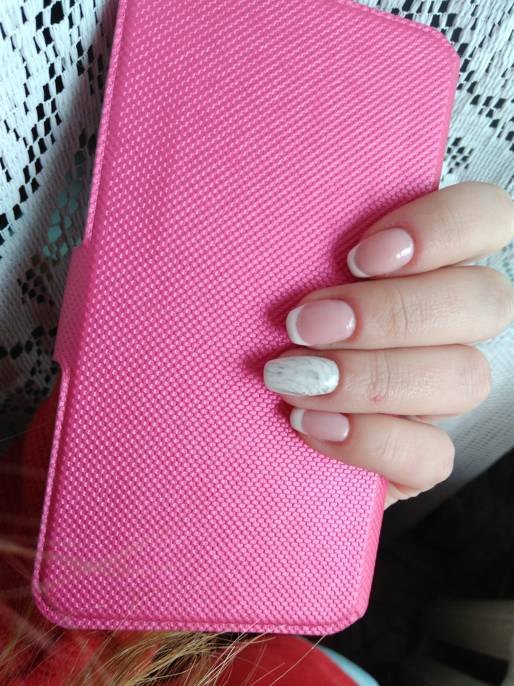

Якісний манікюр у Стрию та Самборі. Нові інструменти.
Название «гель-лак» отображает идею совмещения свойств двух декоративных средств для дизайна ногтей: маникюрного лака и моделирующего геля. В быту гель-лак часто называют «шеллаком», «шелаком» или даже «шилаком» по созвучию с первым гибридным покрытием для ногтей Shellac CND появившимся в России. Название «гель-лак» отображает идею совмещения свойств двух декоративных средств для дизайна ногтей: маникюрного лака и моделирующего геля.
Название «гель-лак» отображает идею совмещения свойств двух декоративных средств для дизайна ногтей: маникюрного лака и моделирующего геля. В быту гель-лак часто называют «шеллаком», «шелаком» или даже «шилаком» по созвучию с первым гибридным покрытием для ногтей Shellac CND появившимся в России. Название «гель-лак» отображает идею совмещения свойств двух декоративных средств для дизайна ногтей: маникюрного лака и моделирующего геля.